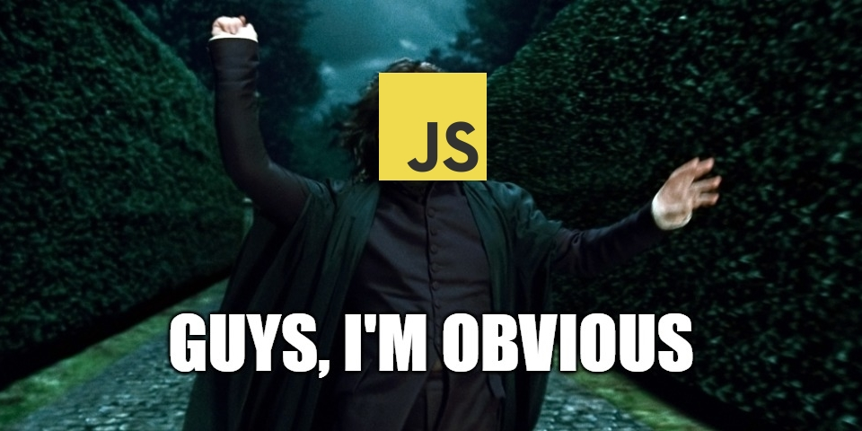

Начитывая очередную статью про малоизвестные фичи языка JavaScript и втихую пописывая какие-то невменяемые решения в консоли браузера, я часто проговариваю в голове мол ну на проде то конечно все не так!? Ведь язык давно обзавелся огромнейшим комьюнити и имеет удивительно широкий охват промышленной разработки. Раз так, то почему же мы часто забываем про его возможность быть понятным для каждого и буквально пропагандируем все эти специфичные и "запоминаемые" конструкции? Just make it Obvious!
Эту графоманию можно пропустить.
Если говорить о промышленной разработке, то в подавляющем большинстве случаев требование к коду быть поддерживаемым даже важнее, чем решать поставленную бизнесом задачу. Для многих это очевидно, для некоторых — отчасти (встречаются конечно и редкие Д'Артаньяны). Чем понятнее наш код, тем меньше рисков для него — попасть на пыльную полку, а для нас и наших преемников — заработать проблем с нервной системой.
Не секрет, что JavaScript удивителен своей гибкостью, что является как его величайшим достоинством, так и досадным проклятием. Путь JavaScript-разработчика долог и крайне интересен: мы поглощаем книжку за книжкой, статью за статьей и набираемся уникального опыта, но местами — действительно language-специфичного. Широчайшее распространение языка и в то же время богатое число накопившихся и подкармливаемых неочевидностей способствуют образованию двух фронтов: тех, кто едва ли не боготворит этот язык, и тех, кто смотрит на него как на неуклюжую и качающую права утку.
И все бы ничего, но часто представители обоих фронтов работают на одном проекте. И обычной, всеми принятой практикой является непонимание (нежелание понимать и даже игнорирование) кода друг друга. И в самим деле, "я же на Java-разработчика устраивался, а не это ваше!". Масла в огонь подливают и сами JavaScript-последователи мол "никто на самом деле не знает JavaScript!" да "я могу это в одну строчку написать на js!". Каюсь, что и сам злоупотребляю на досуге ненормальным программированием...
Эту проблему начинаешь чувствовать, когда занимаешь место маргинала и приобретаешь некоторый опыт работы с людьми и их кодом по обе стороны от баррикад. Планинг и прочие митинги проходят продуктивнее, когда все разработчики понимают друг друга не только на уровне бизнес-сторей, но и хоть немного на уровне их имплементации. Пресловутый бас-фактор меньше сказывается на проекте, когда в случае болезни единственного фронт-ендера остальные члены команды не брезгуют поправить какую-то строчку .js файла. Процесс обмена знаниями в команде и за ее пределы становится прозрачнее для всех, когда каждый имеет более детальную картину. Ну и все в том же духе.
Я никого не призываю "фулстекнуться" или "T-шейпнуться" (как сейчас правильно говорить?), но почему бы нам немного не приподнять этот занавес хотя бы со стороны JavaScript-сообщества? Для этого достаточно лишь привнести немного явности в наш код, используя гибкость языка не чтобы выпендриться, а чтобы нас понимали.
Со своей стороны JavaScript уже давно осознал свою роль не как язык для интерактивности интернет-страничек и "склеивания" их ресурсов, но как мощнейший и достаточный инструмент создания полноценных кросс-платформенных и часто очень даже масштабируемых приложений.
Изначально разработанный для веб-дизайнеров этот "самый неправильно понятый язык программирования" долгое время топтался на месте, несмотря на стремительно растущую популярность и значимость. За 13-14 лет, предшествующие редакции ECMAScript 5.1, трудно вспомнить какие-то важные изменения в стандарте или понять вектор его развития. В то время огромный вклад в формирование экосистемы языка вносило его комьюнити: Prototype, jQuery, MooTools и проч. Получив эту обратную связь от разработчиков, JavaScript проделал значительную работу над ошибками: громкий 6-летний релиз ES6 в 2015 году и теперь уже ежегодные релизы ECMAScript, благодаря переработанному комитетом TC39 процессу внесения новых возможностей в спецификацию.
Что ж, когда наши приложения стали достаточно большими, прототипная модель ООП для описания пользовательских типов перестала себя оправдывать из-за непривычного подхода. Ну серьезно, что это?
function Animal() {
/* Call me via new and I will be the constructor ;) */
}
function Rabbit() {}
Rabbit.prototype = Object.create(Animal.prototype);
Rabbit.prototype.constructor = Rabbit;В языке не появились классы, но появился их синтаксис. И код стал доступен для приверженцев традиционной класс-ориентированной парадигмы:
class Animal {
constructor() {
/* Obviously, the constructor is here! */
}
}
class Rabbit extends Animal {}Сейчас на стадии кандидата в релиз находятся приватные поля класса. С трудом верится, что рано или поздно мы перестанем смешить друг друга соглашением об именовании приватных свойств через нижнее подчеркивание.
В то же время, в языке, где функция является объектом первого порядка и имеет место постоянная событийность, совершенно обычное дело:
let that = this;
setTimeout(function() {
that.n += 1;
}, 1000);И тут начинаются объяснения о контекстах this и замыкании в JavaScript, что отпугивает каждого второго внешнего разработчика. Но во многих случаях, язык позволяет избежать лишних удивлений, явно используя Function.prototype.bind или вовсе так:
setTimeout(() => this.n += 1, 1000);У нас тоже появились стрелочные функции, и это действительно — функции, а не функциональные интерфейсы (да, Java?). Вместе с расширенным набором методов работы с массивом они также помогают писать привычный декларативный пайплайн вычислений:
[-1, 2, -3, 4]
.filter(x => x > 0)
.map(x => Math.pow(2, x))
.reduce((s, x) => s + x, 0);Язык по праву считает себя мультипарадигменным. Но вот простой пример про сигнатуру некоторой функции:
function ping(host, count) {
count = count || 5;
/* send ping to host count times */
}Сначала проходящий мимо задастся вопросом мол вероятно функция может принимать только первый аргумент, а потом мол какого черта в этом случае count становится булевом!? И действительно, функция имеет два варианта использования: с указанием count и без. Но это совершенно неочевидно: приходится смотреть в реализацию и понимать. Разобраться может помочь использование JSDoc, но это не общепринятая практика. И здесь JavaScript пошел навстречу, добавив поддержку не перегрузки, но хотя бы дефолтных параметров:
function ping(host, count = 5) { /* ... */ }Резюмируя, JavaScript обзавелся огромным числом привычных вещей: генераторы, итераторы, коллекции Set и словари Map, типизированные массивы, да даже регулярные выражения начали радовать поддержкой lookbehind! Язык делает все, чтобы быть пригодным для многих вещей и стать дружелюбным для всех.
Сам язык — безусловно молодец, и с этим трудно спорить! Но что не так с нами? Почему мы постоянно напоминаем всему миру, что JavaScript все таки какой-то не такой? Давайте посмотрим на примеры некоторых широко используемых приемов и зададимся вопросом их целесообразности.
Да, JavaScript обладает динамической и слабой системой типов и позволяет проводить операции над чем угодно, неявно выполняя за нас преобразования. Но часто явное приведение типов нам все таки необходимо и можно наблюдать следующее:
let bool = !!(expr);
let numb = +(expr);
let str = ''+(expr);Эти трюки известны каждому JavaScript-разработчику и мотивируются они тем, что мол так можно "быстро" превратить что-то во что-то: под быстротой здесь понимается короткая запись. Может еще и false записывать сразу как !1? Если разработчик так сильно переживает за печатаемые символы, то в его любимой IDE можно без труда настроить необходимый live template или автокомплит. А если — за размер публикуемого кода, то мы всегда прогоняем его через обфускатор, который знает получше нашего как все это обесчеловечить. Почему не так:
let bool = Boolean(expr);
let numb = Number(expr);
let str = String(expr);Результат — такой же, только понятен всем.
Для строковых преобразований у нас есть toString, но для численных есть интересный valueOf, который может быть тоже переопределен. Классический пример, который вводит в ступор "непосвященных":
let timestamp = +new Date;Но ведь есть у Date известный метод getTime, давайте использовать его:
let timestamp = (new Date()).getTime();или готовую функцию:
let timestamp = Date.now();Абсолютно незачем эксплуатировать неявное приведение типов.
Отдельного внимания достойны логические операторы И (&&) и ИЛИ (||), которые в JavaScript не совсем логические: принимают и возвращают значения любого типа. Вдаваться в детали работы вычислителя логического выражения не будем, рассмотрим примеры. Ранее представленный вариант с функцией:
function ping(host, count) {
count = count || 5;
/* ... */
}Вполне может выглядеть следующим образом:
function ping(host, count) {
// OR arguments.length?
if (typeof count == 'undefined') {
count = 5;
}
/* ... */
}Такая проверка и привычней, и в некоторых случаях может помочь избежать ошибки.
Это скорее кажется дикостью для разработчика, который изначально выбрал путь JavaScript. Но для большинства других — вот этот код действительно дикий:
var root = (typeof self == 'object' && self.self === self && self) ||
(typeof global == 'object' && global.global === global && global);Да, это компактно, и да, это могут позволить себе популярные библиотеки. Но, пожалуйста, давайте не злоупотреблять этим, так как наш код будут читать не контрибьюторы в JavaScript, а разработчики, решающие бизнес-задачи за выделенные сроки.
Может встретиться и вовсе такой паттерн:
let count = typeof opts == 'object' && opts.count || 5;Это определенно короче обычного тернарного оператора, но при чтении такого кода первым делом вспоминаешь приоритеты используемых операций.
Если же мы пишем функцию-предикат, которую передаем в тот же Array.prototype.filter, то обернуть возвращаемое значение в Boolean — это хороший тон. Сразу становится очевидно назначение этой функции и не возникает диссонанса у разработчиков, языки которых имеют "правильные" логические операторы.
Распространенный пример проверки наличия элемента в массиве или подстроки в строке с помощью побитового НЕ (NOT), который предлагается даже некоторыми учебниками:
if (~[1, 2, 3].indexOf(1)) {
console.log('yes');
}Какую проблему это решает? нам не приходится осуществлять проверку !== -1, так как indexOf получит индекс элемента или -1, а тильда прибавит 1 и поменяет знак. Тем самым выражение будет оборачиваться "ложью" в случае индекса -1.
Но избежать дублирования кода можно и
по-другому: вынести проверку в отдельную функцию какого-нибудь
utils-объекта, как это делают все, чем использовать побитовые операции
не по назначению. В lodash для этого есть функция includes, и работает она не через жопу тильду. Можно возрадоваться, так как в ECMAScript 2016 закрепился метод Array.prototype.includes (у строк тоже есть).
Но не тут-то было! Еще тильду (наравне с XOR) используют для округления числа, отбрасывая десятичную часть:
console.log(~~3.14); // 3
console.log(2.72^0); // 2Но ведь есть parseInt или Math.floor для этих целей. Побитовые операции здесь удобны для быстрого набора кода в консоли, так как они к тому же имеют низкий приоритет перед остальной арифметикой. Но на код-ревью такое лучше не пропускать.
Некоторые странные практики трудно отнести к какому-то конкретному разделу. Например, говорят, что скобки при вызове конструктора необязательны и следующие два выражения идентичны:
let rabbit = new Rabbit();
let rabbit = new Rabbit;И это действительно так! но зачем создавать вопрос на пустом месте? Не каждый язык может похвастать такой "особенностью". А если все таки хочется, то пусть это будет соглашением по всему проекту. Иначе возникает ложное чувство, что есть какая-то разница.
Похожая ситуация с объявлением набора переменных. Синтаксис директив var и let позволяет объявить (и определить) сразу несколько переменных, перечисленных через запятую:
let count = 5, host, retry = true;Кто-то использует переводы строк для читаемости, но в любом случае такой синтаксис — не частое явление в популярных языках. Никто не даст по рукам и не спросит, если написать так:
let count = 5;
let retry = true;
let host;Опять таки, если есть соглашение о хорошем стиле на уровне проекта/компании, то вопросов нет. Просто не надо чересчур комбинировать варианты синтаксиса по настроению.
Есть в языке и вовсе специфичные конструкции, как например IIFE — позволяет вызвать функцию сразу по месту ее определения. Весь трюк в том, чтобы парсер распознал функциональное выражение, а не декларацию функции. И это можно сделать уймой разных способов: классически обернув скобками, через void или любой другой унарный оператор. И в этом нет ничего замечательного! Необходимо выбрать единственный вариант и не отходить от него без необходимости:
(function() {
/* ... */
}());Не надо использовать операторы, чтобы хакнуть парсер. Когда на проект приходит новичок, хочется погрузить его в бизнес-логику приложения, а не кормить объяснениями откуда были подсмотрены все эти восклицательные знаки и войды. Есть еще вторая классическая запись через скобки и интересный комментарий от Крокфорда по этому поводу.
Появление синтаксиса классов в ES6 не было сопровождено привычными модификаторами доступа. А иногда разработчику хочется и на классах пописать, и приватность соблюсти. Что приводит к такому коду Франкенштейна:
class Person {
constructor(name) {
let _name = name;
this.getName = function() { return _name; }
}
toString() {
return `Hello, ${this.getName()}`;
}
}То есть в конструкторе для экземпляра создаются аксессоры, а приватность достигается их доступом к локальным переменным-свойствам через замыкание. Этот пример выглядит вполне даже лакончино, но это совершенно немасштабируемый подход, если вокруг него не построить документированное решение-фреймворк. Господа, давайте использовать либо имеющиеся классы (и ждать стандартизации приватных полей), либо популярный паттерн-модуль. Создавать какое-то промежуточное микс-решение здесь — такое себе, так как классы перестают быть классами, а код — вразумительным.
Подытоживая, здравой мыслью будет поделиться принятым в проекте стайл-гайдом, конфигом для линтера или просто фрагментами кода с коллегами, которые вносят в проект его не-JavaScript составляющую. Язык предлагает несколько вариантов буквально для каждой типовой задачи, поэтому улучшить понимание друг друга и попасть под общий знаменатель не составит труда (ну или почти).
Тема эта конечно холиварная и примеров можно привести гораздо больше, но основной посыл статьи о том, что не следует злоупотреблять неочевидностями в JavaScript там, где этого можно избежать. Природа языка — уникальна: позволяет писать как элегантные и выразительные (в меру "упоротые") решения, так и понятные и доступные для всех. Я в корне не согласен с расхожим мнением, что JavaScript "сам себя наказал" или "похоронен под грудой добрых намерений и ошибок". Потому что сейчас большую часть странностей демонстрирует не язык, а образовавшаяся вокруг него культура разработчиков и (не)равнодушных.